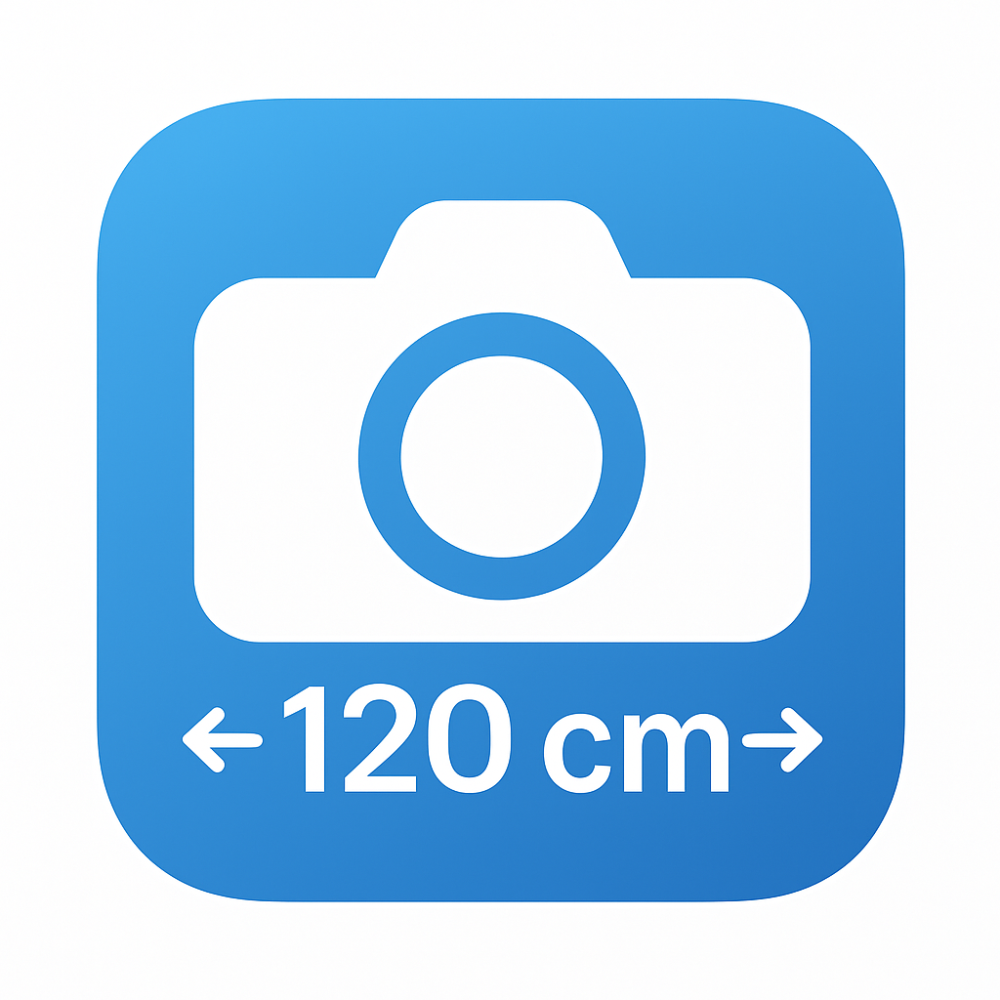

DimensionCam is an ad-free, open-source Android application that allows you to capture or select photos,
add precise measurement annotations between points, and export beautifully annotated images.
Key Features
Photo Management - Take photos or select from gallery, view thumbnails in a grid,
non-destructive deletion
Precise Annotation - Place start/end points, input distance values with multiple
units (mm, cm, dm, m)
Customizable Styles - Choose from 3 endpoint styles: T-Arrow-T, T-T, or Arrow-Arrow
Rich Color Options - Select from 6 colors: Red, Green, Blue, White, Black, Purple
Flexible Editing - Drag control points, adjust line width, undo/redo operations
Multi-language - Full support for English and Chinese (中文)
Export - Save high-quality annotated images to device storage
Clean Architecture - Built with MVVM pattern, Room database, and modern Android
libraries
Technical Highlights
📱 Minimum Android API: 24 (Android 7.0)
🏗️ Architecture: MVVM with LiveData and Repository pattern
💾 Database: Room persistence library
🖼️ Image Loading: Glide
🔍 Photo Viewing: PhotoView with zoom support
📝 Language: Java with XML layouts
Screenshots

How to Use
Launch the app and navigate to the Photos tab
Add a photo using the camera or select from gallery
Switch to the Annotation tab
Tap to place start and end points on the image
Enter the distance measurement and customize the style
Use the Export button to save your annotated image
Contributing
Contributions are welcome! Please fork the repository,create a feature branch, and submit a pull request.
Before submitting, run ./gradlew lint to ensure code quality.